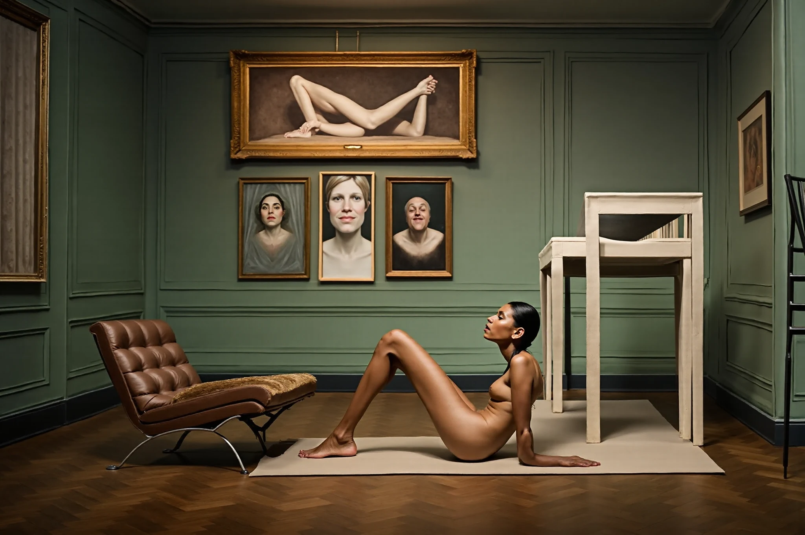

Software / Photoshop / ComfyUI
Making OpenLayer
How a manual Photoshop to ComfyUI round trip became a free, open-source plugin that generates, inpaints and upscales on your own GPU.
Read the storyProcess notes, visual experiments, and project writing.
How a manual Photoshop to ComfyUI round trip became a free, open-source plugin that generates, inpaints and upscales on your own GPU.
Read the story


Digital bodies, synthetic identity, and experiments with virtual human presence, cinematic light, and realtime rendering.
Read project.jpg)
.jpg)
.jpg)
Characters caught between memory, cartoon logic, and machine-assisted transformation.
View series
 Processed
Original
Processed
Original
A photographic experiment shaped by chaos theory and the sensitivity of images to small changes.
Read article ComfyUI
Photoshop
ComfyUI
Photoshop
Moving between precise image editing and node-based AI generation while preserving the structure of the original artwork.
Read workflow


A loose visual notebook of photographs, generated fragments, and unfinished image thoughts.
Open notes